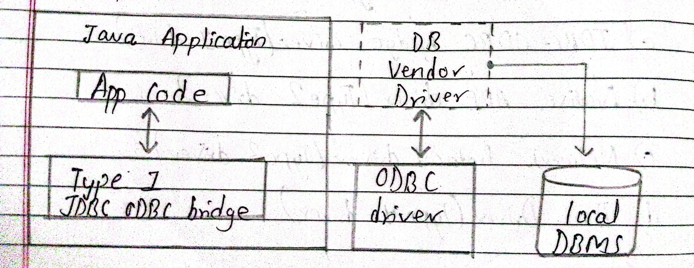
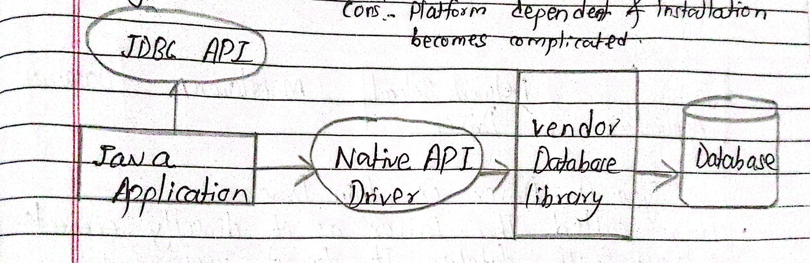
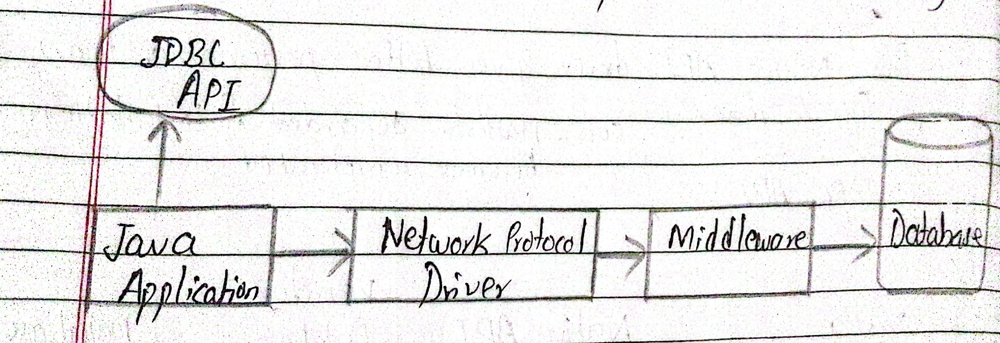
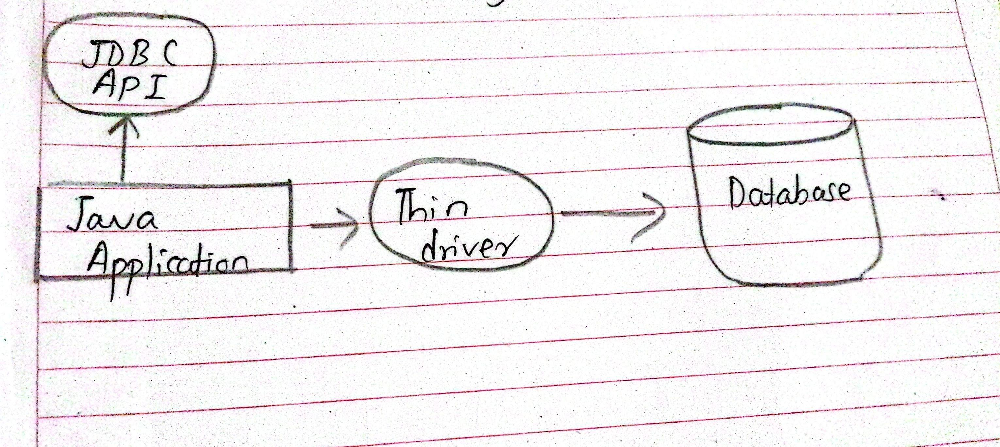

JDBC (java database connectivity) refers to the java database connectivity which refers to a java API that enables developers using java applications to interact with relational database.
Features and Functions of JDBC
- Provides methods to connect to a database, execute query, retrieve results and update records.
- JDBC is a part of JAVA Standard Edition (JSE).
- Allow java program to communicate with any database that support sql
- JDBC acts as a bridge between a java application and a database using different JDBC drivers.
Different Driver Types of JDBC
Type 1 Driver OR JDBC-ODBC driver

It uses ODBC driver to connect to the database. The JDBC-ODBC bridge driver converts JDBC method call into ODBC function calls.
Type 1 driver is now discouraged due to platform dependency. Support for this driver is no longer available.
Pros
- Database independent (can be connected to any database easily)
- Easier to use
- Quick implementation for legacy systems
Cons
- Performance is degraded because the ODBC function call is converted into JDBC method call.
- Needs to be installed on individual client machine
- Type 1 Driver isn't written in java thats why it is not a portable driver.
Type 2 Driver OR Native API driver

JDBC api calls are converted into native (C/C++) API calls which are unique to the database.
These drivers are provided by the database vendors.
The vendors specific driver must be installed on each client machine. If we change the DB, we need to change the native API.
These driver is not fully written in java that is why it is called partial java driver.
Pros
- Native API driver gives better performance than Type 1 driver.
- Direct access to database-specific features
Cons
- Platform dependent and installation becomes complicated.
- Requires vendor-specific driver installation
Type 3 Driver OR Network Protocol Driver

It uses middleware (application server) that converts JDBC method calls into vendors specific database protocol.
All the Database connectivity drivers are present in the single server, hence no need for individual client side installation.
This kind of driver is extremely flexible and a single driver can provide access to multiple database.
Pros
- Fully written in java hence they are portable drivers
- No client side installation is required.
Cons
- Network support is required for client machine
- Maintenance of network protocol driver is costly.
Type 4 Driver OR Thin Driver

It is also called Thin driver as it directly interacts with database. It does not require any native database libraries that is why it is known as Thin.
It is highest performance driver available for the database and is usually provided by the vendor itself.
Pros
- No extra software is required for client-side or server-side.
- Fully written in java language hence they are portable drivers
- Better performance than any driver
Cons
- As it is database dependent, if db varies then the driver will vary.
- Vendor-specific implementation with no flexibility
- May not support all database features